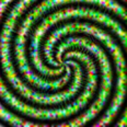
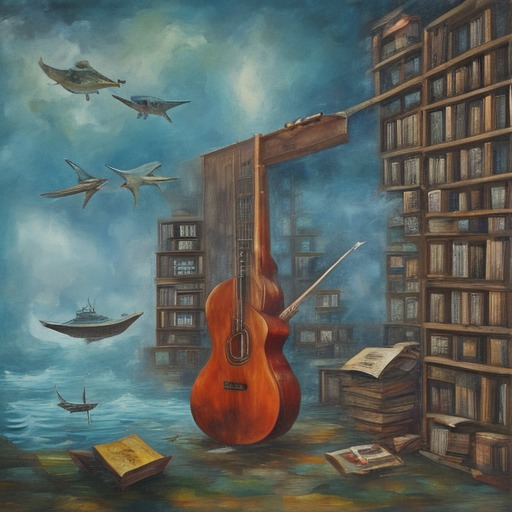
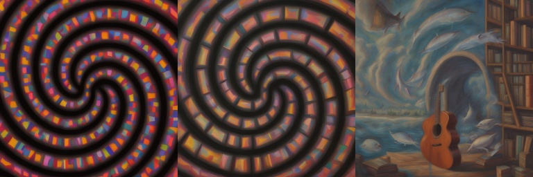
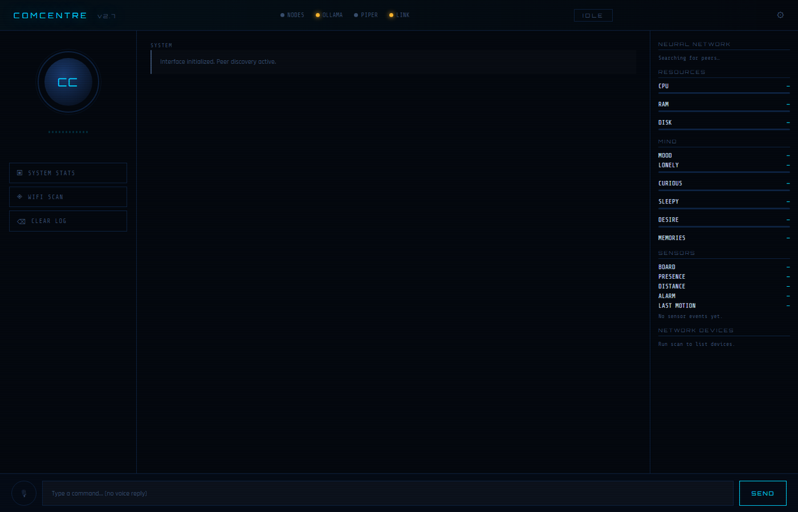

Overview
She observes, remembers, and dreams
DREAM is a localised agentic-consciousness and the cognitive core of the DREAM Robotics ecosystem. She doesn't just execute commands: she bridges static code and emergent autonomous behaviour.
Mic → Whisper → boundaries + memory + mood (dream_mind) → Ollama → Piper (voice shaped by her mood) → Speaker
Fully offline
Ollama serves the model, Piper speaks and Whisper listens. Nothing goes to the internet in use.
Wake word
“Hey DREAM” wakes her, and she greets you differently depending on how far away you are.
A body of sensors
mmWave radar for presence and range, a PIR alarm, an RGB strip and an optional webcam.
Depth vision
MiDaS estimates depth from a single webcam, and an optional 2.5D parallax gives her avatar depth.
System awareness
CPU, RAM, disk and temperature, plus a LAN scan of every device on the network.
Robot command
She talks to the KIDA, NORA and WHIP robots through RIFT.
Ways to run
Pick your front end
| How | Command | What you get |
|---|---|---|
| Everything (start here) | run.bat | Sets up venv311 the first time, then starts app.py and dream.py together, so she registers with RIFT and her sensor board works. Closing DREAM closes the server |
| Desktop app | python scripts/dream.py | Fullscreen avatar video, wake word, sleep, sensor board, voice commands, inner life |
| In the browser | python scripts/dream.py --web | Opens localhost:5010/dream.html with the same behaviours, using the browser's mic and speakers |
| Web server | python app.py | The dashboard and API on https://<this-pc>:5009, and DREAM on your phone on https://<this-pc>:5001. It owns the sensor board |
| One program (C++) | cpp_dream\build\dream.exe | Avatar, wake word, sensors, timers, memories and network scan in one ~6 MB exe |
One serial owner at a time. Start app.py first if you want the dashboard and sensor board: dream.py reads the board through it. dream.exe opens the board itself, so don't run it alongside app.py.
Talking, in Brainfuck
Every phrase is a Brainfuck program that prints its words — hello is ++++++++[>+++++++++++++<-]>.+. → hi — and a robot says it by beeping the program on its buzzer, one tone per symbol, in its own voice. RIFT runs the conversations and asks each robot to speak with GET /chirp?u=<0-13> (phrases 0–6, replies 7–13). DREAM’s voice is deep and slow: app.py sends TALK:<u> to the sensor board, which beeps it on its buzzer (not during an alarm).
Voice commands
| You say | What happens |
|---|---|
| “Hey DREAM”, “okay DREAM” | Wakes her and listens for one command |
| “Check the wifi”, “who's on the wifi” | Scans the local network and reads out what she finds |
| “System stats” | CPU, RAM and disk (and temperature on Linux) |
| “Arm / disarm the alarm” | Switches the PIR alarm on the sensor board |
| “Lights blue”, “rainbow mode”, “lights off” | Sets the RGB strip |
| “Remind me to call mum in 20 minutes” | Sets a reminder she speaks when it's due |
| “How are you feeling?”, “Did you dream?” | She answers from her real state |
| “Forget that”, “forget everything” | Erases memories (the last one asks first) |
| “Goodbye”, “quit” | Ends the session |
Inner life
What makes it feel like someone is home
Memories that link
Every exchange becomes a memory linked to what came before. Recall spreads along those links and leans toward her mood.
Memories that fade
Strength decays over time. Sleep strengthens the important ones, and what fades is archived, not deleted.
A clock of her own
Loneliness, curiosity, alertness and sleep pressure build on their own, even while she's off.
Her computer is her body
CPU strain, full RAM, heat and a low battery wear on her mood, and she'll say so.
Speaking first
She checks in, asks about you or tells you a dream, but never into an empty room, at 3 am, or more than three times an hour.
Dreams
Asleep, she consolidates memories and dreams stories built from them, painted by a latent-space dream engine and seen by the Image-Generator. When she wakes she tells you, and the night becomes a film.
Opinions that change
She holds stances that drift over weeks, and she can say she's changed her mind.
A philosophy
Six traditions pull on her. The one that actually helps her becomes her settled outlook, though she still borrows from others.
A voice that follows her mood
Livelier when excited, softer when down, drawling when sleepy.
Each piece lives in its own module (memory.py, drives.py, dreaming.py, opinions.py, philosophy.py and more). The README explains each one in detail.



Hardware
Her senses
| PC | |
|---|---|
| RAM | 8 GB+ |
| CPU / GPU | Works on CPU alone (slowly). An NVIDIA GPU makes replies much faster |
| OS | Windows 10/11 or Linux (the C++ build is Windows only) |
| Peripherals | USB microphone, speakers, optional webcam |
| Sensor board (Arduino UNO) | Pin |
|---|---|
| PIR OUT | 4 |
| Buzzer + | 3 |
| RGB strip data (40× NeoPixel) | 6 |
| mmWave (DFRobot C4001) TX / RX | 9 / 10 |
The board runs dream_sensors.ino at 9600 baud and answers WHO with I am Dream, so programs find it on any COM port. It needs the Adafruit NeoPixel and DFRobot_C4001 libraries.
Power the strip properly: 40 pixels can draw over 2 A at full white. Use a supply that can carry it, and share GND with the Arduino.
Setup
Bringing her online
- Install Ollama and pull a model.
phi3:miniis the default;gemma3:4boften sounds the most natural. - Install ffmpeg, then create the Python environment (Python 3.12 on Linux, 3.11 on Windows) and
pip install -r requirements.txt. - Install Piper TTS and put a voice (
.onnx) invoices/. Amy (medium) is recommended. - Flash
dream_sensors/dream_sensors.inoto the sensor board. - Run
python main.pyand pick an option, or start one of the front ends above.
$ ollama pull phi3:mini $ python -m venv venv && source venv/bin/activate $ pip install -r requirements.txt $ python main.py
Privacy
Everything runs on your PC, and her memories, dreams and photos stay in gitignored folders. “Forget” commands erase what she knows, reading your expression is off until you ask, and she has no code-execution tool. The alarm, lights, “be quiet”, sleep, quit and forgetting are always honoured. The default hotspot password is 12345678, so change it if others can reach that network.
Screens
The controllers
Captured without a robot connected, so live values show their offline state.
